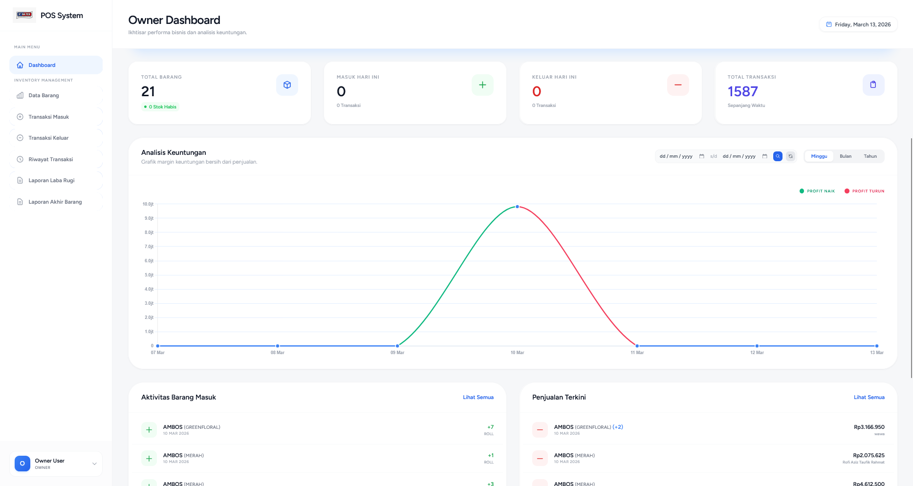
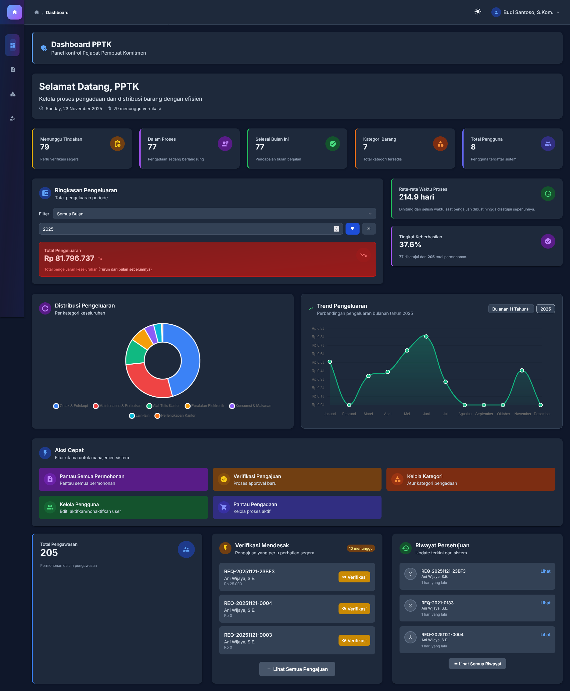
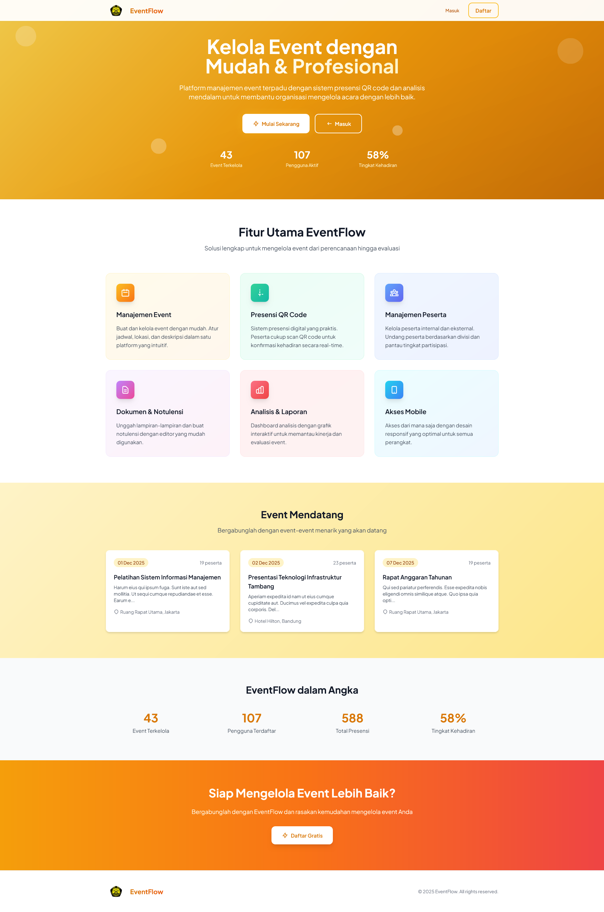
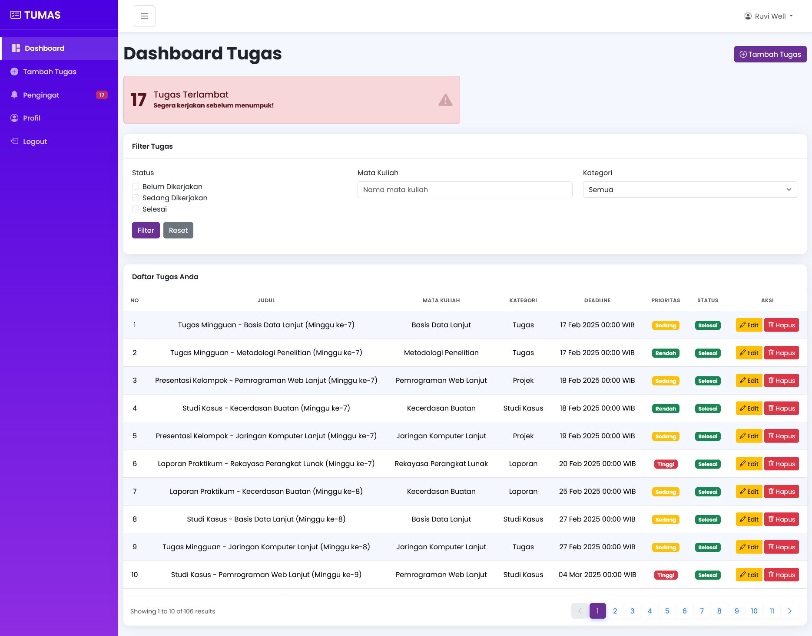
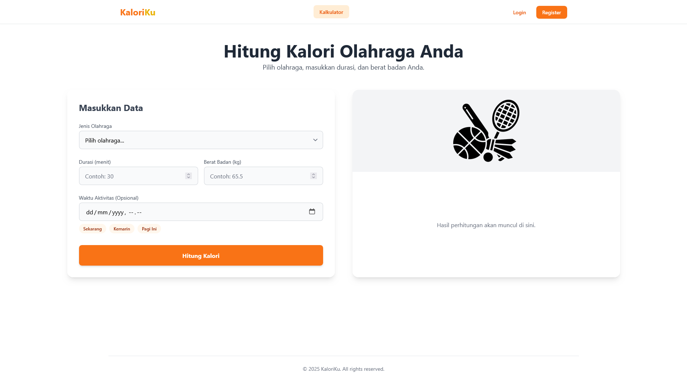

Dianalicollection
Smart POS & Inventory for Textile Wholesalers with complex unit tracking.
Product Engineer & Web Developer • Laravel & Tailwind
I’m a product engineer and web developer focused on dependable admin systems that feel effortless to operate. Every build balances reliable software quality, transparent project management, and budget-friendly delivery, and I’m ready to learn whatever tooling a project demands.
2 live deployments · 3 academic accelerators
“Every prototype ships with a clear sprint log, so stakeholders never guess what’s next.”
Project Durations
Smart POS & Inventory for Textile Wholesalers with complex unit tracking.
Task management assistant for campus teams with workload forecasts.
Event administration suite for PSDMBP with analytics-ready dashboards.
Deployed prototype that keeps evolving with procurement stakeholders.
Professional Projects

A specialized Smart POS & Inventory system for textile wholesalers. It solves the complexity of tracking large units (Rolls, Cartons, Bales) with varying internal volumes.

A procurement workflow for the West Java Secretariat built in record time. Four role-specific dashboards keep Ajudan, PPTK, KPA/KBU, and Sekretariat Daerah aligned from request to monitoring, while dark/light modes reduce fatigue for late review sessions.
Academic Prototypes

A command center for PSDMBP to monitor 40+ events, user cohorts, and categories. Analytics cards surface progress at a glance, while filters, exports, and Google Calendar sync keep admins and invitees aligned in seconds.

A campus-focused task manager that keeps student teams accountable. Escalations, auto-reminders, and workload heatmaps ensure supervisors always know what needs attention next.

A lightweight calorie tracker dedicated to student athletes. Charts, quick searches, and offline-first logging make nutrition reviews easier after every training session.
Tooling & Workflow
Primary delivery stack for production-ready admin systems and rapid prototyping.
Utility-first styling with lightweight interations for responsive, stateful dashboards.
Accessibility-first Laravel UI kit that keeps every panel consistent.
Secure uploads and dependable scheduling inside procurement and campus flows.
Schema planning, migrations, and performance tuning for transactional workloads.
Design handoff plus data visualization for reporting screens and executive summaries.
Let’s build together
I partner with civic teams, startups, and agencies that need dependable systems—Laravel-powered or otherwise. Bring me in whenever you want calm UX, predictable delivery, and a collaborator who isn’t afraid to explore a new stack.
Need references or a sprint log sample? I’m happy to share walkthroughs from recent builds.
Download Resume (soon)